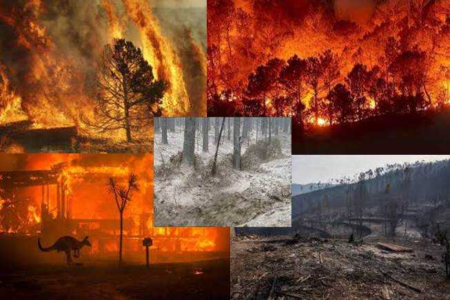

Consecuencias de los incendios forestales.
Un incendio forestal trae consigo más afectaciones de las que se perciben a simple vista, pues hay otros daños que son difíciles de cuantificar.
Suelos expuestos y susceptibles a la erosión.
La pérdida de suelo por erosión es la más grave de todas las consecuencias de incendios forestales. La destrucción de la estructura superficial del suelo y arrastre de cenizas origina una compactación que impide la penetración del agua, reduciendo así su humidificación. Las lluvias torrenciales arrastran las cenizas y las aguas aumentan su turbidez contaminándolas.
El clima se altera, se incrementa el efecto invernadero en la atmósfera terrestre.
Los incendios forestales liberan a la atmósfera importantes cantidades de CO2, además de otros gases y partículas, lo cual favorece el efecto invernadero y el cambio climático. Las partículas de carbón y las cenizas en suspensión, tienen, por otro lado, un efecto perjudicial en la salud de las personas.

Impacto en la Vegetación
Se interrumpen los ciclos naturales de los bosques y desaparecen las especies nativas, mientras que proliferan las plantas invasoras. Asimismo, las distintas especies vegetales presentes en los distintos ecosistemas responden de forma diferencial al fuego, dependiendo de sus habilidades para tolerarlo y de los mecanismos de regeneración que posean.
Impacto en la fauna
Los incendios forestales pueden tener un impacto tanto en animales vertebrados como invertebrados, por ejemplo, muerte de individuos, perdida de habitad, territorios, refugio y alimentación. Asimismo, la pérdida de fauna por incendios forestales va a depender de la velocidad del viento, las cargas de combustible, el contenido de humedad de la vegetación, la época del año y el tamaño del fuego, entre otros.